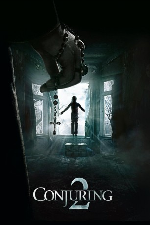

#4529 Conjuring 2
Alternativ: The Conjuring 2
 
 IMDB-Wertung: 7.5 / 10
IMDB-Wertung: 7.5 / 10  Metascore: 0
Metascore: 0 
Die berühmten Dämonologen Ed und Lorraine Warren sind dank ihrer spektakulären Fälle mittlerweile zu echten Berühmtheiten geworden. Doch die Geister und Dämonen dieser Welt schlafen nicht und deswegen wird das Paar nach England, genauer gesagt in den Londoner Stadtteil Enfield, gerufen. Dort lebt die alleinerziehende Mutter Peggy Hodgson mit ihren vier Kindern Margaret, Janet, Johnny und Billy. Bei ihnen geht es nicht mit rechten Dingen zu und besonders Janet wird mehrmals Opfer eines Dämons, der von ihr Besitz ergreift und durch sie mit den Menschen spricht. Für die Warrens beginnt ein neuer Fall, der ihnen alles abverlangen wird…
Jahr: 2016
Dauer: 133 Minuten
FSK: 16
Land: USA Studio: Warner Bros.Tonspuren: DD5.1 - ,
Untertitel: Deutsch,
Auflösung: 1080p (1920x800) Größe: 9318 MB
Genre: Thriller, Horror, Mystery
Regisseur: James Wan
Drehbuch: Paul Viragh
Soundtrack:
Darsteller:
 Patrick Wilson als Ed Warren
Patrick Wilson als Ed Warren Vera Farmiga als Lorraine Warren
Vera Farmiga als Lorraine Warren Madison Wolfe als Janet Hodgson
Madison Wolfe als Janet Hodgson Frances O'Connor als Peggy Hodgson
Frances O'Connor als Peggy Hodgson- Lauren Esposito als Margaret Hodgson
- Benjamin Haigh als Billy Hodgson
- Patrick McAuley als Johnny Hodgson
 Simon McBurney als Maurice Grosse
Simon McBurney als Maurice Grosse Maria Doyle Kennedy als Peggy Nottingham
Maria Doyle Kennedy als Peggy Nottingham Simon Delaney als Vic Nottingham
Simon Delaney als Vic Nottingham Franka Potente als Anita Gregory
Franka Potente als Anita Gregory- Bob Adrian als Bill Wilkins
 Robin Atkin Downes als Demon Voice
Robin Atkin Downes als Demon Voice Bonnie Aarons als Demon Nun
Bonnie Aarons als Demon Nun Javier Botet als Crooked Man
Javier Botet als Crooked Man Steve Coulter als Father Gordon
Steve Coulter als Father Gordon Abhi Sinha als Harry Whitmark
Abhi Sinha als Harry Whitmark- Chris Royds als Graham Morris
 Sterling Jerins als Judy Warren
Sterling Jerins als Judy Warren- Daniel Wolfe als Kent Allen
- Annie Young als Constable Heeps
- Elliot Joseph als Constable Peterson
 Joseph Bishara als Demon
Joseph Bishara als Demon- Kate Cook als Mrs. More
- Shannon Kook als Drew
- Holly Hayes als Audience Member
- Jennifer Collins als Louise Defeo
- Sarah Cortez als Dawn , uncredited
 Gioacchino Jim Cuffaro als Neighbour , uncredited
Gioacchino Jim Cuffaro als Neighbour , uncredited- Michael DeBartolo als Ronald DeFeo Sr. , uncredited
 Nancy DeMars als Woman Walking Dog , uncredited
Nancy DeMars als Woman Walking Dog , uncredited- Jesse Michael Fullington als Pedestrian , uncredited
- Diego Gomez als John Matthew , uncredited
- Joy Isa als Market Trader , uncredited
- Danny Jackson als Aaron , uncredited
 Patrick Carney Junior als Gentleman Smoker , uncredited
Patrick Carney Junior als Gentleman Smoker , uncredited- Jason Liles als Crooked Man shadow , uncredited
- Alexa Najera als Allison Defeo , uncredited
- Glenn Povéy als Rocker - Musician , uncredited
- Jamie Soricelli als Shadow Nun , uncredited
- John Trevillion als Schoolboy , uncredited
- Christof Veillon als Maurice , uncredited
- Debora Weston als Talk Show Host
- Cory English als Skeptic Kaplan
- Emily Tasker als Camilla
- Carol Been als Lollipop Woman
- Lance C. Fuller als Audience Member
- Thomas Harrison als Peter
 Claire Ashton als Theatre Audience / Market Lady , uncredited
Claire Ashton als Theatre Audience / Market Lady , uncredited Kishore Bhatt als Pedestrian , uncredited
Kishore Bhatt als Pedestrian , uncredited
Datei: X:\6-Hexalogie(A-Z)\Conjuring - Annabelle - Nun\Conjuring 2 (2016, FSK16, 1920x800).mkv seit 09.10.2016
Festplatte: HD Collection-3(N-Z)-6(A-Z)
 Es gibt insgesamt 9 Filme in der Gruppe '6-Hexalogie(A-Z)\Conjuring - Annabelle - Nun'
Es gibt insgesamt 9 Filme in der Gruppe '6-Hexalogie(A-Z)\Conjuring - Annabelle - Nun'